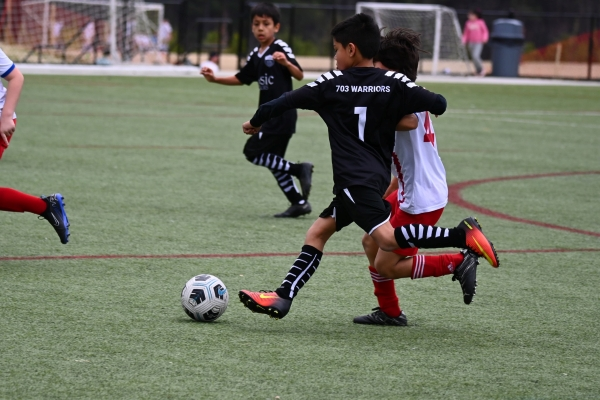
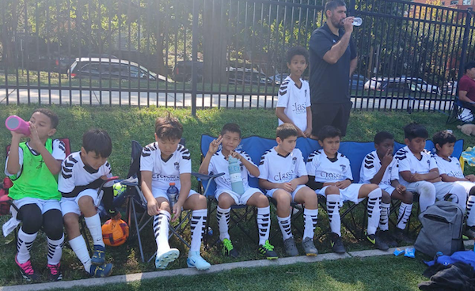
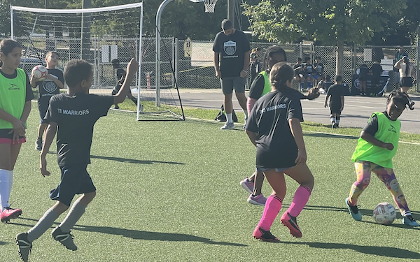
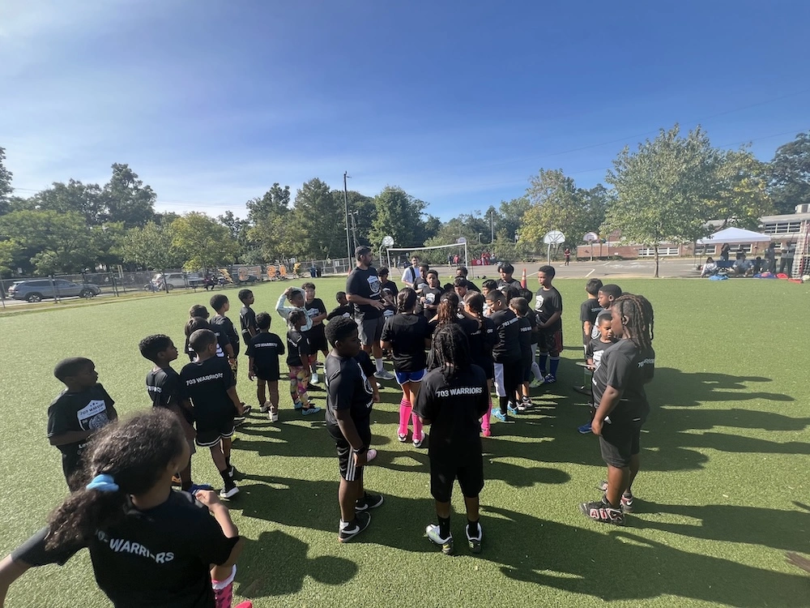

← Return to Homepage
703 Warriors Blog ✍️
5 Lessons From the Field on Outreach & Engagement üëÄ
By Anees Merzi | June 2025
How we built trust, showed up, and served 630+ kids? No shortcuts, just the truth.
MYTHS BUSTED ü§Ø
By Anees Merzi | May 2025
No league. No fields. No full-time staff. No problem. Here's how we're beating top teams and transforming lives—without the fluff.

DON'T BRING YOUR KID HERE ⚠️
By Anees Merzi | April 2025
We build leaders through a bold, untraditional model focused on real development. This isn’t for everyone and that’s the point.

Breaking Barriers in Youth Soccer üöß
By Anees Merzi | March 2025
Many talented kids don’t get a chance to play due to financial and accessibility issues. Here's how 703 Warriors is changing that.
The Impact of Community Fitness üí™
By Anees Merzi | February 2025
Regular fitness activities help kids build strength, agility, and lifelong healthy habits. Find out why it’s crucial for development.

We Are Creating Robots ü§ñ
By Anees Merzi | January 2025
Street soccer isn’t just a game! It’s a way to foster creativity, teamwork, and accessibility for all kids, regardless of background.
Building Mental Toughness üèãÔ∏è‚Äç‚ôÇÔ∏è
By Anees Merzi | December 2024
Talent only goes so far. Learn how mental strength plays a crucial role in youth soccer development.

Birth Year vs School Year ü§î
By Anees Merzi | November 2024
Youth travel soccer in the U.S. currently follows birth-year registration, but does it really benefit player development?